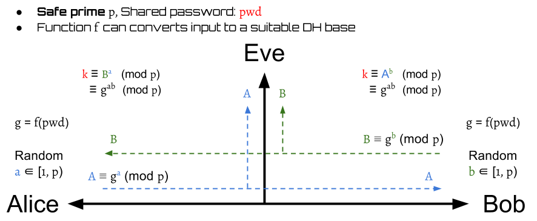
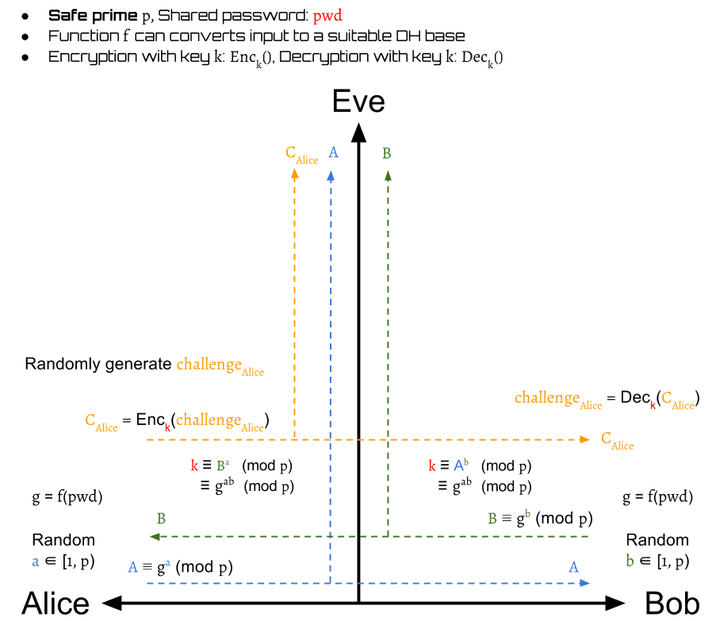
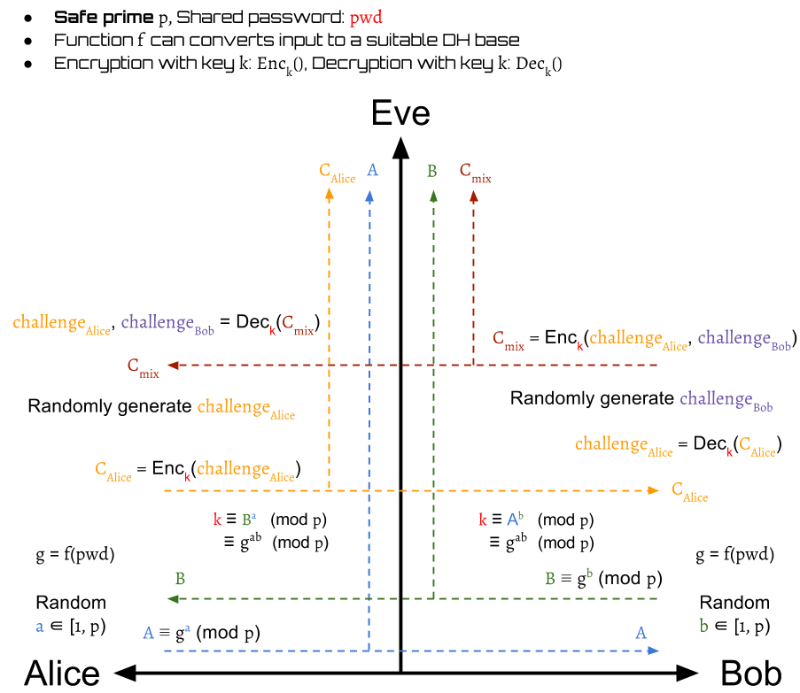
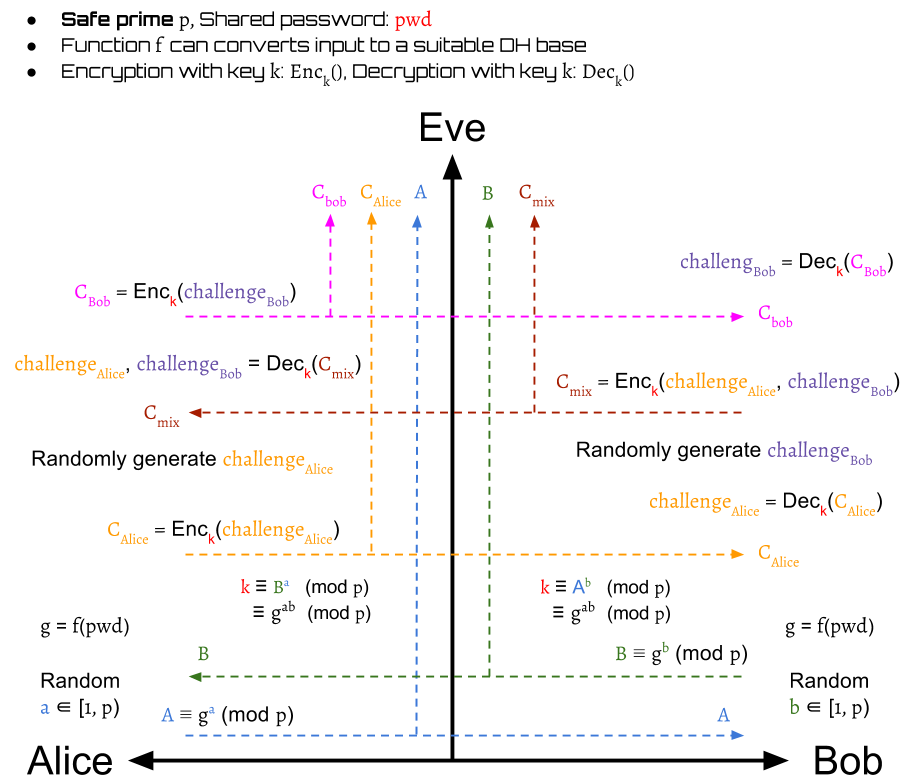
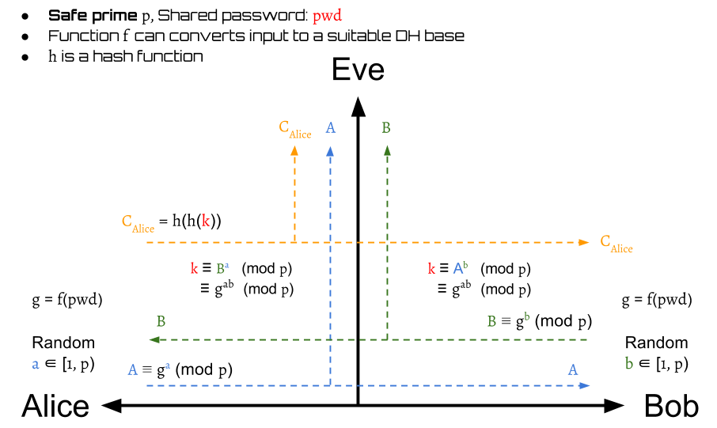
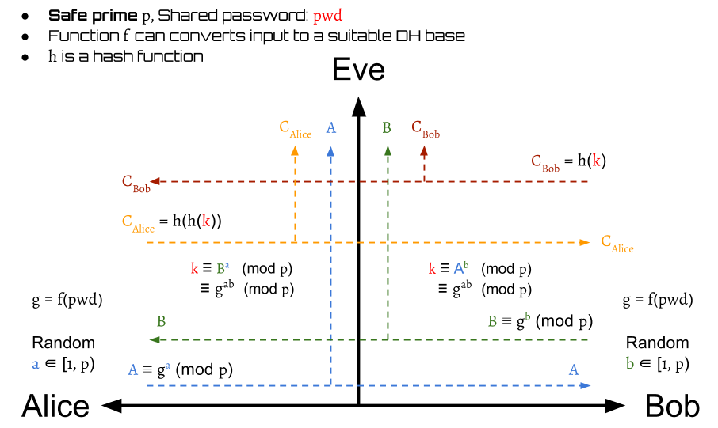
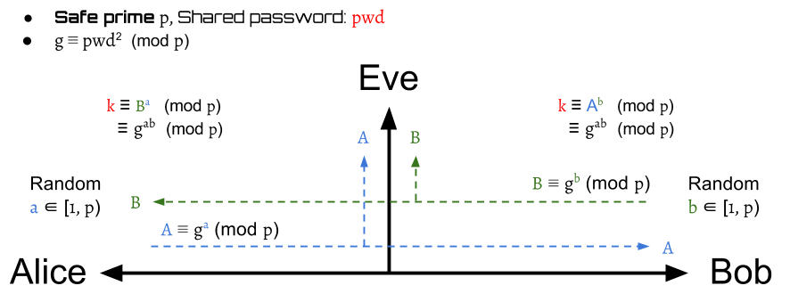
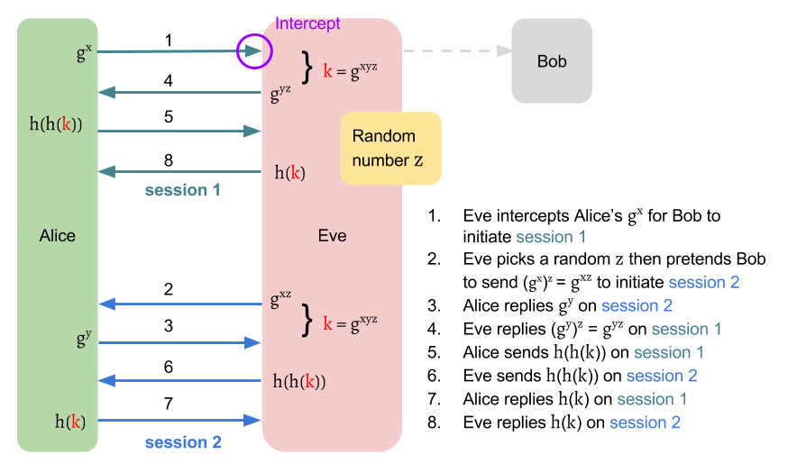
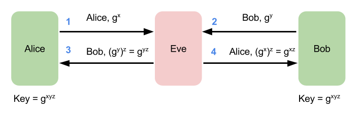

Simple Password Exponential Key Exchange
Simple Password Exponential Key Exchange(SPEKE) is based on Diffie-Hellman Key Exchange(DH), which is a balanced PAKE protocol. The difference of SPEKE against DH is that its group generator is derived from the password rather than a public assumption. Only who knows the password can produce this private generator.
How it work
The SPEKE has two stages:
- Session key establishment by DH
- Authentication
Although there are some variations of SPEKE, their stage 1 is basically same. It uses the DH protocol to build a session key.
The stage 2 is to authenticate the conversation subject. We will introduce two ways to authenticate in this content.
Stage 1: Session Key Establishment

The stage 1 of SPEKE is shown above. Instead of using a public group generator directly, SPEKE has a function \( f \) that can produce generators by inputs. Thus, we use the shared password \( pwd \) to create a generator $$ g = f(pwd) $$ and use it to complete the DH protocol.
The modulo \( p \) used here is a safe prime \begin{aligned} p = 2q + 1 \text{, where $q$ is also a prime} \end{aligned}
After this stage finishes, the Alice and Bob can get a symmetric session key \( k \) to encrypt/decrypt the transmitted messages.
Stage 2 with Challenge–Response Authentication
Challenge–Response Authentication is one way to verify whether or not the other party is Bob. The detail can be seen in the following terms.
 Alice generates a random challenge \( challenge_{Alice} \) and then encrypt it to \( C_{Alice} \) by the session key \( k \): $$ C_{Alice} = Enc_k(challenge_{Alice}) $$
Bob then can decrypt \( C_{Alice} \) to \( challenge^{Bob}_{Alice} \) by the session key \( k \): $$ challenge^{Bob}_{Alice} = Dec_k(C_{Alice}) $$
 Then, Bob also generates a random challenge \( challenge_{Bob} \). It is encrypted with \( challenge^{Bob}_{Alice} \) into \( C_{mix} \) by \( k \) and then send back to Alice: $$ C_{mix} = Enc_k(challenge^{Bob}_{Alice}, challenge_{Bob}) $$
After Alice receives \( C_{mix} \), she can decrypt it to get $$ challenge^{Bob}_{Alice}, challenge^{Alice}_{Bob} = Dec_k(C_{mix}) $$
Alice now is able to verify whether or not Bob is valid by comparing the received Bob's decrypted value of her challenge and her original one. $$ valid(Bob) = \begin{cases} true, & \text{if } challenge^{Bob}_{Alice} = challenge_{Alice} \\ false, & \text{otherwise} \end{cases} $$
If Bob is invalid, then Alice immediately drops the session. Otherwise, the protocol should continue.

Beside the \( challenge^{Bob}_{Alice} \), Alice also get a decrypted value of Bob's challenge \( challenge^{Alice}_{Bob} \). This is used as a proof that Alice has the same key \( k \) as Bob. Alice sends \( C_{Bob} \) to Bob for authentication: $$ C_{Bob} = Enc_k(challenge^{Alice}_{Bob}) $$
When Bob receives the \( C_{Bob} \), he can decrypt it: $$ challenge^{Alice}_{Bob} = Dec_k(C_{Bob}) $$ to compare Alice's decrypted value of his own challenge with his original one.
$$ valid(Alice) = \begin{cases} true, & \text{if } challenge^{Alice}_{Bob} = challenge_{Bob} \\ false, & \text{otherwise} \end{cases} $$ If they are different, the Bob immediately drops the session. Otherwise, Alice is authenticated and the protocol finishes.
Stage 2 with Hash-Key Authentication
Instead of random challenge, another simpler method to authenticate the other party is to use hash function. The steps consists of the following:
 First, Alice send twice hashed value of the session key to Bob: $$ C_{Alice} = h(h(k)) $$
Then Bob can authenticate Alice by $$ valid(Alice) = \begin{cases} true, & \text{if } C_{Alice} = h(h(k)) \\ false, & \text{otherwise} \end{cases} $$
If Alice is a invalid party, then the session is dropped. Otherwise, the protocol continues.

After verifying Alice, Bob also need to prove his identification to Alice. Bob sends $$ C_{Bob} = h(k) $$ to Alice. Alice then can certify Bob by $$ valid(Bob) = \begin{cases} true, & \text{if }h(C_{Bob}) = C_{Alice} \\ false, & \text{otherwise} \end{cases} $$
Finally, they can authenticate mutually.
Summary
Security Issues
Short Exponents
Similar to the case of DH-EKE, partial bits may be predictable.
Test multiple passwords in one time
f(x) = x2 mod p
 The basic idea to get the generator is to define \( f(x) = x^2 \bmod p \), , where \( p \) is a safe prime such that \( p = 2q + 1 \), \( q \) is also a prime. Then, the generator \( g \) will be computed by \( pwd^2 \bmod p \). This makes sure that every \( f(x) \) will be a generator of a cyclic subgroup of \( G \), where \( G = { x \vert 0 < x < p \cap x \in N } \) (We need a proof here!)
If we take \( q = 11 \) to get a safe prime \( p = 23 \), then the generators are:
| x | f(x) |
|---|---|
| 1 | 1 |
| 2 | 4 |
| 3 | 9 |
| 4 | 16 |
| 5 | 2 |
| 6 | 13 |
| 7 | 3 |
| 8 | 18 |
| 9 | 12 |
| 10 | 8 |
| 11 | 6 |
| 12 | 6 |
| 13 | 8 |
| 14 | 12 |
| 15 | 18 |
| 16 | 3 |
| 17 | 13 |
| 18 | 2 |
| 19 | 16 |
| 20 | 9 |
| 21 | 4 |
| 22 | 1 |
| 23 | 0 |
| 24 | 1 |
| 25 | 4 |
| .. | .. |
From the table above, one obvious fact is that the attacker is allowed to test two \( pwd \) by guessing one \( g = f(pwd) \). For example, the attacker can guess the \( g = 16 = f(pwd) \). If he doesn't hit, then he knows that \( pwd \) is not 4 and 19. In the worst case that the \( pwd \) is fixed, the attacker can use half time to force brute the \( pwd \).
The collision is guaranteed because \begin{aligned} (q + k + 1)^2 \equiv (q - k)^2 \pmod p \\ \text{ ,where $k \in Z, p = 2q + 1$.} \end{aligned}
Proof: $$ \begin{aligned} (q + k + 1)^2 &\equiv (q + (k + 1))^2 \\ & \equiv q^2 + 2q(k+1) + (k+1)^2 \pmod {2q + 1} \\ &\equiv q^2 + 2kq + 2q + k^2 + 2k + 1 \pmod {2q + 1} \\ &\equiv q^2 - 2kq + k^2 + 4kq + 2k + 2q + 1 \pmod {2q + 1} \\ &\equiv (q - k)^2 + 2k(2q + 1) + (2q + 1) \pmod {2q + 1} \\ &\equiv (q - k)^2 + (2k + 1)(2q + 1) \pmod {2q + 1} \\ &\equiv (q - k)^2 \pmod {2q + 1} \end{aligned} $$
When \( k = 0 \), then \( (12)^2 \equiv (11)^2 \pmod {23} \). When \( k = 1 \), then \( (13)^2 \equiv (10)^2 \pmod {23} \). ...
f(x) = (hash(x))2 mod p
Suppose we have a hash table
| x | hash(x) | f(x) |
|---|---|---|
| 1 | 17 | 13 |
| 2 | 9 | 12 |
| 3 | 20 | 9 |
| 4 | 1 | 1 |
| 5 | 15 | 18 |
| 6 | 10 | 8 |
| 7 | 2 | 4 |
| 8 | 5 | 2 |
| 9 | 22 | 1 |
| 10 | 23 | 0 |
| 11 | 7 | 3 |
| 12 | 19 | 16 |
| 13 | 4 | 16 |
| 14 | 6 | 13 |
| 15 | 3 | 9 |
| 16 | 11 | 6 |
| 17 | 8 | 18 |
| 18 | 14 | 12 |
| 19 | 21 | 4 |
| 20 | 12 | 6 |
| 21 | 18 | 2 |
| 22 | 13 | 8 |
| 23 | 16 | 3 |
Even we use the hash the map the \( pwd \) before squaring it, the fact that the attacker is allowed to test two \( pwd \) by guessing one \( g = f(pwd) \) won't be changed. For example, the attacker guesses \( g = 16 = f(pwd) \). If he doesn't hit, then he knows that \( pwd \) is not 12 and 13.
Impersonation Attack
The author of J-PAKE points out a two attacks against SPEKE. The first attack allows an attacker to successfully build two sessions with a same victim without knowing the password. 
Although the attacker may not get the session key \( k \), it's still dangerous. Assume that Alice is a server of a bank. Suppose Alice sends a encrypted message "Pay Jimmy one million" to Bob on session 1. Eve can simply reply this message to Alice on session 2. Since Eve is a valid user who is authenticated as Bob, Alice may follow the received instruction and pay Jimmy one million.
Key-malleability Attack
The author of J-PAKE points out a two attacks against SPEKE. The second attack allows an attacker to have a hand in the session key between two parties without being detected. 
Program to verify the generator
We can write a python program like speke.py to verify the generator \( g = f(pwd) \) is a generator of a subgroup of \( G \).
If \( p = 23, f(x) = x^2 \bmod p \), then the output will be as follows:
| password | generator | subgroup | sorted subgroup |
|---|---|---|---|
| 1 | 1 | 1 | 1 |
| 2 | 4 | 4, 16, 18, 3, 12, 2, 8, 9, 13, 6, 1 | 1, 2, 3, 4, 6, 8, 9, 12, 13, 16, 18 |
| 3 | 9 | 9, 12, 16, 6, 8, 3, 4, 13, 2, 18, 1 | 1, 2, 3, 4, 6, 8, 9, 12, 13, 16, 18 |
| 4 | 16 | 16, 3, 2, 9, 6, 4, 18, 12, 8, 13, 1 | 1, 2, 3, 4, 6, 8, 9, 12, 13, 16, 18 |
| 5 | 2 | 2, 4, 8, 16, 9, 18, 13, 3, 6, 12, 1 | 1, 2, 3, 4, 6, 8, 9, 12, 13, 16, 18 |
| 6 | 13 | 13, 8, 12, 18, 4, 6, 9, 2, 3, 16, 1 | 1, 2, 3, 4, 6, 8, 9, 12, 13, 16, 18 |
| 7 | 3 | 3, 9, 4, 12, 13, 16, 2, 6, 18, 8, 1 | 1, 2, 3, 4, 6, 8, 9, 12, 13, 16, 18 |
| 8 | 18 | 18, 2, 13, 4, 3, 8, 6, 16, 12, 9, 1 | 1, 2, 3, 4, 6, 8, 9, 12, 13, 16, 18 |
| 9 | 12 | 12, 6, 3, 13, 18, 9, 16, 8, 4, 2, 1 | 1, 2, 3, 4, 6, 8, 9, 12, 13, 16, 18 |
| 10 | 8 | 8, 18, 6, 2, 16, 13, 12, 4, 9, 3, 1 | 1, 2, 3, 4, 6, 8, 9, 12, 13, 16, 18 |
| 11 | 6 | 6, 13, 9, 8, 2, 12, 3, 18, 16, 4, 1 | 1, 2, 3, 4, 6, 8, 9, 12, 13, 16, 18 |
| 12 | 6 | 6, 13, 9, 8, 2, 12, 3, 18, 16, 4, 1 | 1, 2, 3, 4, 6, 8, 9, 12, 13, 16, 18 |
| 13 | 8 | 8, 18, 6, 2, 16, 13, 12, 4, 9, 3, 1 | 1, 2, 3, 4, 6, 8, 9, 12, 13, 16, 18 |
| 14 | 12 | 12, 6, 3, 13, 18, 9, 16, 8, 4, 2, 1 | 1, 2, 3, 4, 6, 8, 9, 12, 13, 16, 18 |
| 15 | 18 | 18, 2, 13, 4, 3, 8, 6, 16, 12, 9, 1 | 1, 2, 3, 4, 6, 8, 9, 12, 13, 16, 18 |
| 16 | 3 | 3, 9, 4, 12, 13, 16, 2, 6, 18, 8, 1 | 1, 2, 3, 4, 6, 8, 9, 12, 13, 16, 18 |
| 17 | 13 | 13, 8, 12, 18, 4, 6, 9, 2, 3, 16, 1 | 1, 2, 3, 4, 6, 8, 9, 12, 13, 16, 18 |
| 18 | 2 | 2, 4, 8, 16, 9, 18, 13, 3, 6, 12, 1 | 1, 2, 3, 4, 6, 8, 9, 12, 13, 16, 18 |
| 19 | 16 | 16, 3, 2, 9, 6, 4, 18, 12, 8, 13, 1 | 1, 2, 3, 4, 6, 8, 9, 12, 13, 16, 18 |
| 20 | 9 | 9, 12, 16, 6, 8, 3, 4, 13, 2, 18, 1 | 1, 2, 3, 4, 6, 8, 9, 12, 13, 16, 18 |
| 21 | 4 | 4, 16, 18, 3, 12, 2, 8, 9, 13, 6, 1 | 1, 2, 3, 4, 6, 8, 9, 12, 13, 16, 18 |
| 22 | 1 | 1 | 1 |